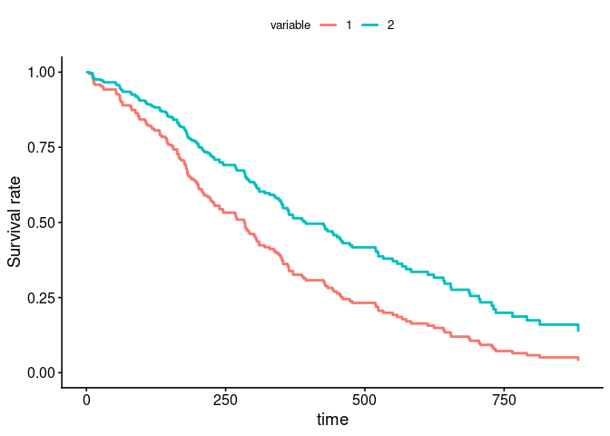

GPU-accelerated survival analysis — Cox Proportional Hazards (CoxPH) and Weighted Cumulative Exposure (WCE) models, built on PyTorch, with an R interface via reticulate. The WCE model additionally relies on KeOps. survivalGPU scales classical survival models to large datasets and to heavy bootstrap resampling by running the core computations on the GPU. It’s also possible to use the library without a GPU (CPU fallback).
Documentation, with user guides and API reference: https://jeanfeydy.github.io/survivalGPU/
Features
-
Cox Proportional Hazards models (
coxphGPU()), with Breslow and Efron handling of ties, built as a drop-in companion tosurvival::coxph(). Only requires PyTorch — works on Windows. -
Weighted Cumulative Exposure (WCE) models (
wceGPU()) for time-varying exposure effects, built as a drop-in companion toWCE::WCE(). Requires the optionalpykeopspackage, which is not available on Windows (see below);wceGPU()raises an informative error if it’s missing. -
GPU acceleration of the likelihood and its gradients via PyTorch (+ KeOps for WCE), with a CPU fallback (
use_cuda()to check what’s available). -
Bootstrap resampling for confidence intervals on both models, as a separate step after the fit (
bootstrap()).
Installation
Install survivalGPU from CRAN, together with the Python libraries it uses behind the scenes (via the reticulate R package). You need R >= 4.1 and Python >= 3.10.
# 1. The R package:
install.packages("survivalGPU")
# 2. The Python libraries, once (torch is a large download):
library(reticulate)
virtualenv_create("survivalGPU", version = ">=3.10")
virtualenv_install("survivalGPU", c("numpy", "torch", "pandas", "scipy",
"matplotlib", "beartype", "jaxtyping"))
# Only for wceGPU() -- not available on Windows:
virtualenv_install("survivalGPU", "pykeops")On macOS, pykeops also needs Apple’s compiler (xcode-select --install) and OpenMP (brew install libomp). On Windows, coxphGPU() works but wceGPU() doesn’t (use WSL2 if you need it).
To install the development version from GitHub instead, use remotes::install_github("jeanfeydy/survivalGPU", subdir = "R"). The R package has no compiled code, so this doesn’t need a compiler.
At the start of each R session, select the Python environment before loading survivalGPU:
library(reticulate)
use_virtualenv("survivalGPU")
library(survivalGPU)See vignette("installation") for troubleshooting, or to use your own Python environment.
Quick start
Let’s make a small example for a Cox PH model with the lung cancer dataset from the survival package. Before loading survivalGPU, use your virtual Python environment (see above or vignette("installation")).
library(reticulate)
use_virtualenv(virtualenv = "survivalGPU")Check if CUDA is detected :
use_cuda()
#> [1] FALSEBy default, functions run with GPU if detected. Then we specify the number of bootstrap replicates, and consequently the batchsize argument, according to CUDA drivers detection.
if (use_cuda()) {
n_bootstrap <- 1000
batchsize <- 200
} else {
n_bootstrap <- 50
batchsize <- 10
}You can realize the Cox model with the coxphGPU() function, which is written in the same way as the survival::coxph() function from survival package, with a Surv object in the formula. Bootstrap confidence intervals are added afterwards with bootstrap(), which reuses the design matrix and the patient ids stored in the fitted model: fit it with x = TRUE and patient_id. patient_id identifies each patient (subject) in data, so that bootstrap resampling is performed at the patient level rather than at the row level (relevant when a patient has several rows, e.g. with time-varying covariates); bootstrap() cannot run without it.
lung <- lung[stats::complete.cases(lung[c("time", "status", "age", "sex", "ph.ecog")]), ]
lung$id <- seq_len(nrow(lung)) # one row per patient here, so a row index works as patient_id
coxphGPU_fit <- coxphGPU(Surv(time, status) ~ age + sex + ph.ecog,
data = lung,
ties = "breslow",
x = TRUE,
patient_id = "id")
coxphGPU_bootstrap <- bootstrap(coxphGPU_fit, R = n_bootstrap,
batchsize = batchsize)With summary method, you obtain results for initial model, and a confidence interval by normal distribution process. A confidence interval is also estimated for coefficients by bootstrap (if bootstrap() was called on the model).
summary(coxphGPU_bootstrap)
#> Call:
#> coxphGPU.default(formula = Surv(time, status) ~ age + sex + ph.ecog,
#> data = lung, ties = "breslow", x = TRUE, patient_id = "id")
#>
#> n= 227, number of events= 164
#>
#> coef exp(coef) se(coef) z Pr(>|z|)
#> age 0.011041 1.011102 0.009267 1.191 0.233
#> sex -0.551890 0.575861 0.167742 -3.290 0.001 **
#> ph.ecog 0.462947 1.588749 0.113574 4.076 4.58e-05 ***
#> ---
#> Signif. codes: 0 '***' 0.001 '**' 0.01 '*' 0.05 '.' 0.1 ' ' 1
#>
#> exp(coef) exp(-coef) lower .95 upper .95
#> age 1.0111 0.9890 0.9929 1.030
#> sex 0.5759 1.7365 0.4145 0.800
#> ph.ecog 1.5887 0.6294 1.2717 1.985
#>
#> Concordance= 0.637 (se = 0.025 )
#> Likelihood ratio test= 30.41 on 3 df, p=1e-06
#> Wald test = 29.84 on 3 df, p=1e-06
#> Score (logrank) test = 30.41 on 3 df, p=1e-06
#>
#> ----------------
#> Confidence interval with 50 bootstraps for exp(coef), conf.level = 0.95 :
#> 2.5% 97.5%
#> age 0.986309 1.032110
#> sex 0.409196 0.759636
#> ph.ecog 1.302890 2.020790To visualize your model, you can plot adjusted survival curves with survminer::ggadjustedcurves().
survminer::ggadjustedcurves(coxphGPU_bootstrap,
variable = "sex",
data = lung)
If you have no model, it’s possible to estimate survival curves with Kaplan-Meier estimation by survival::survfit(), and you can use survminer::ggsurvplot() to plot a Kaplan-Meier survival curve.
Moreover, it’s possible to evaluate proportional hazards assumption, and plot a forestplot of your model. All is explain in the vignette("coxPH").
Development
Clone the repository and install the R package in development mode:
# git clone https://github.com/jeanfeydy/survivalGPU.git
# cd survivalGPU/R
devtools::install_deps(dependencies = TRUE)
devtools::load_all()Run the test suite with:
devtools::test()coxphGPU() tests run as long as reticulate can reach a Python environment with torch installed. wceGPU() tests (test-wceGPU.R) additionally need pykeops (not available on Windows) in that same environment — see vignette("installation") to add it to your virtualenv. If it’s missing, those tests are skipped with an informative message instead of failing.
Both cases are exercised in CI (see R-CMD-check.yaml): one matrix leg installs pykeops for real WCE coverage, the others don’t, to check the graceful-skip path.
License
Distributed under the terms of the LGPL-2.1-or-later license. See LICENSE.